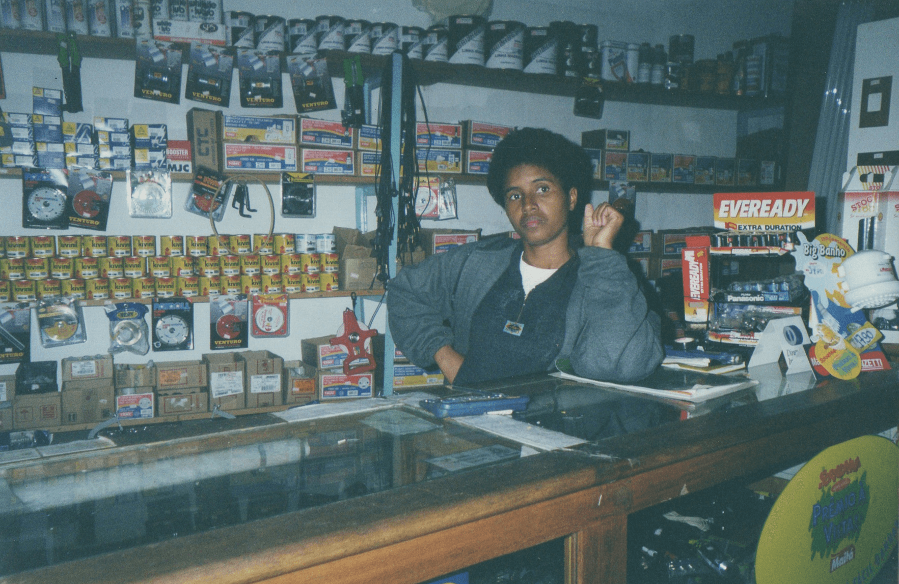

A Casa Thomaz foi inaugurada no dia 3 de fevereiro de 1997, sonho do casal Gilberto Tomas e Edna Maria, inicialmente
foi idealizada pra ser uma loja que atendesse com excelência a demanda local, porém, o mundo não é um arco-íris e
os resultados não corresponderam às expectativas. Durante os dois primeiros anos, a loja não gerava receita suficiente
para se manter e desanimava quem acompanhasse seu progresso, mesmo assim, insistentes, o casal agregou recursos paralelos
os investiu no seu sonho

Dona Edna no 1º ano da loja, 1997.
Mudança de endereço
1998
No 1º semestre de 1998, houve uma mudança no endereço da loja, passando a situar-se na avenida do bairro, assim, melhor
localizada, a loja ganhou visibilidade. Além disso, o jovem casal se empenhou para firmar parcerias com fábricas,
assim sendo, passaram a trazer os melhores produtos, direto da fábrica, coisa que antes não acontecia pois o bairro
era de difícil acesso e pouco conhecido pelos represantes comerciais.
Negócios fluindo
2000 - 2002
Depois de 3 anos aberta, a loja crescera com o bairro e já contava com um gama de clientes e fornecedores entusiasmados
com o comércio que se formara, pois ali notavam algo sério. No mesmo ano, iniciou-se a construção da sede própria,
num local próximo.
Construção da sede própria, 2000.
Inauguração da sede própria
2002
No dia 25 de agosto, a nova sede foi inaugurada e é onde se encontra até os dias atuais. Lá foi um palco de muita prosperidade
e de novas amizades, além disso, fez-se presente a certeza de que não seria possível funcionar de forma diferente,
cada cliente por vez, assim, o lema "tradição, qualidade e garantia" era cada vez mais entendido por quem passava
por lá.
Reforma/Reestruturação
2012
Não satisfeitos, o casal resolveu reestruturar toda a loja, inspirados no conceito pegue e pague dos mercados, a loja
ganhou gôndulas e uma enorme expansão da área de venda, assim, o cliente poderia andar pela loja e escolher o que
mais lhe agrada. Instalou-se também um sistema de venda, o ambiente ganhou climatização e o quadro de funcionários
foi ampliado, com isso, pode-se dizer que uma nova Casa Thomaz havia sido lançada. É deste modo que a loja opera até
hoje, sendo referência no ramo de construção na área continental de São Vicente.